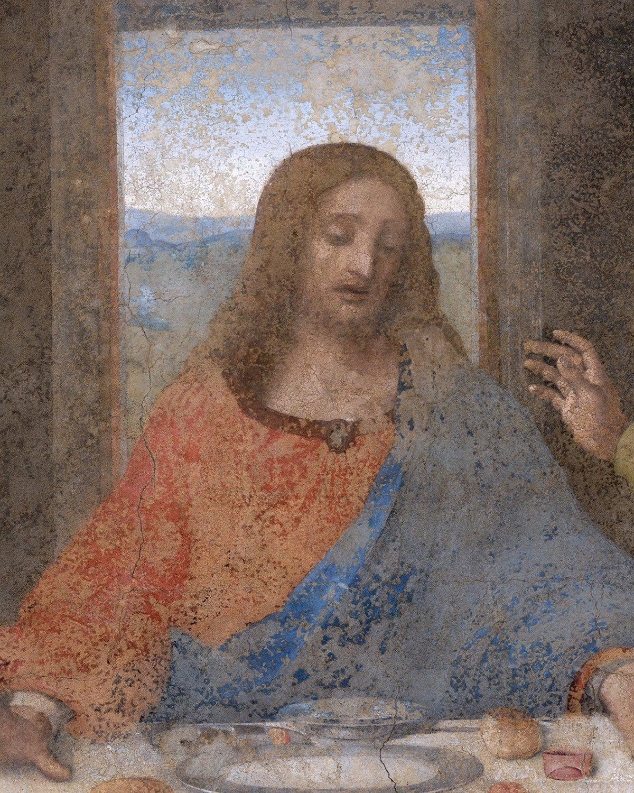
Five hundred years later, we're still paying for it.
Swipe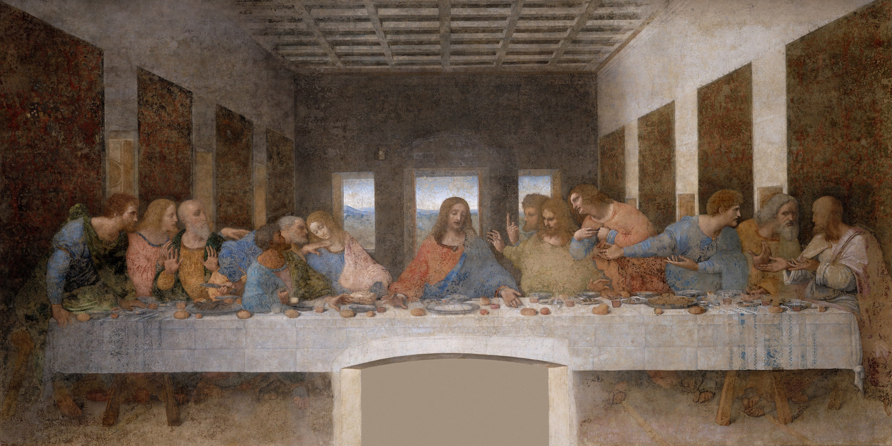
It fills the end wall of the friars' dining hall at Santa Maria delle Grazie. They ate their meals beneath it.
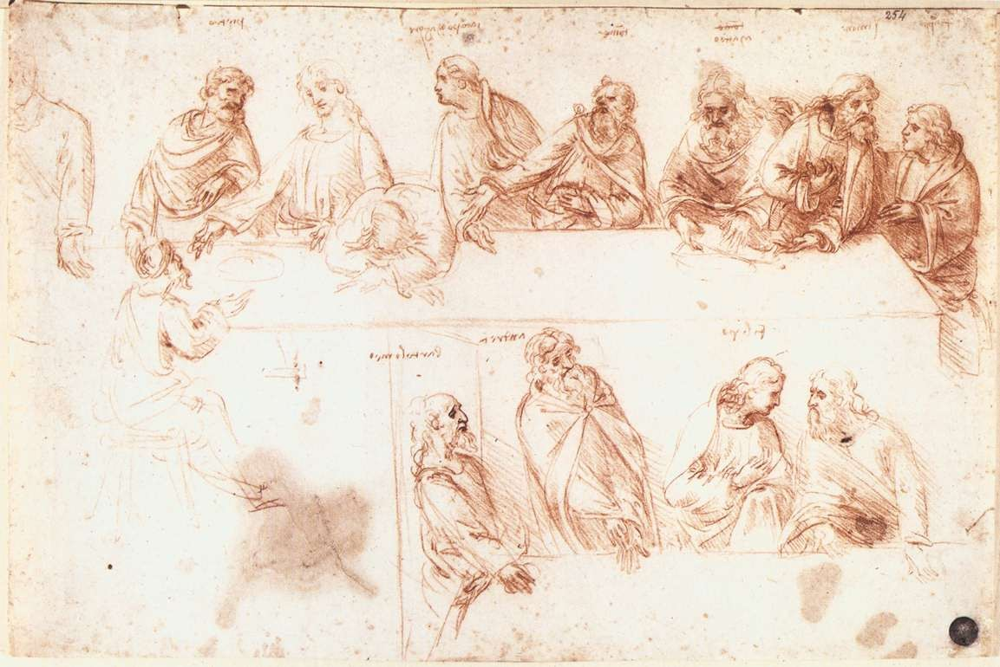
Leonardo's sketch for the table · VeniceThe prior's young nephew, Matteo Bandello, watched him work. Some days Leonardo painted from dawn to dusk without eating. Other days he just stared at the wall, climbed up, added a stroke or two, and left.
Paint goes into wet plaster, one patch a day. As it dries, it becomes part of the wall. No second thoughts.
Tempera and oil on a dry, primed wall. Layer after layer, change after change. But the paint only sits on top.
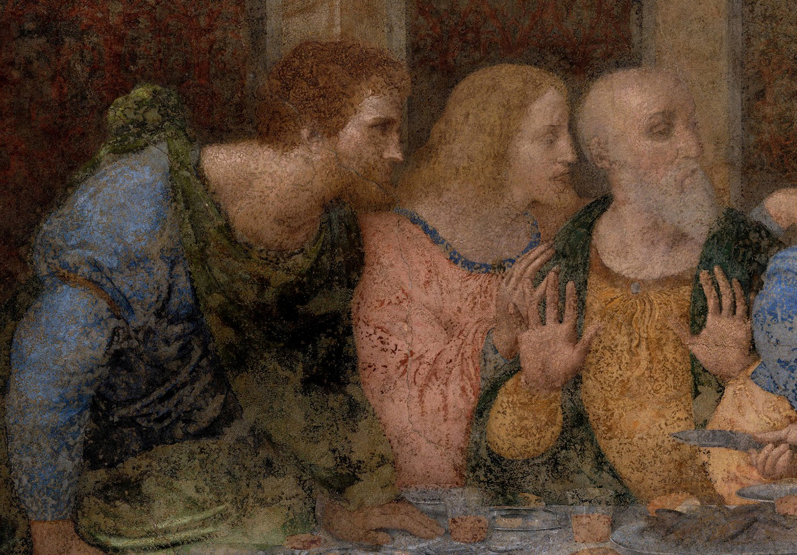
Up on their feet. Andrew's palms fly open.
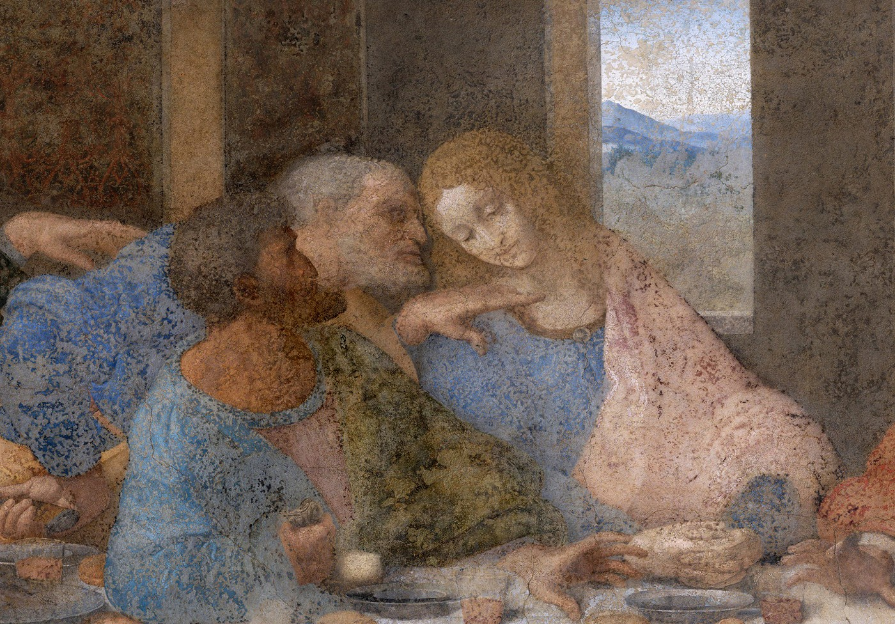
Peter lunges, knife in hand. Judas pulls back.
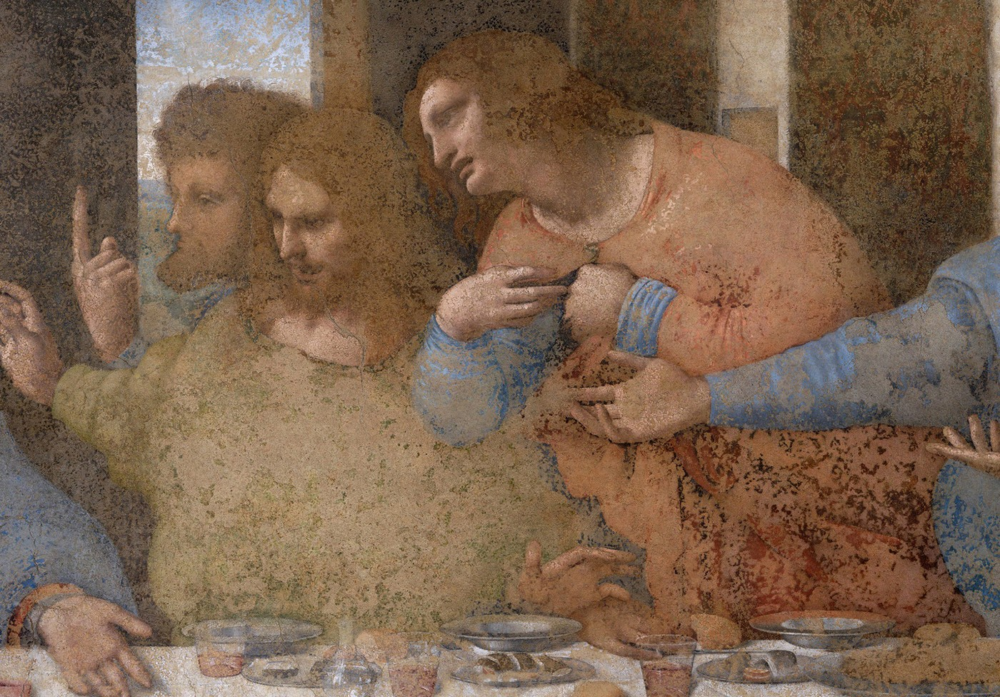
A finger jabs up. Philip presses his chest.
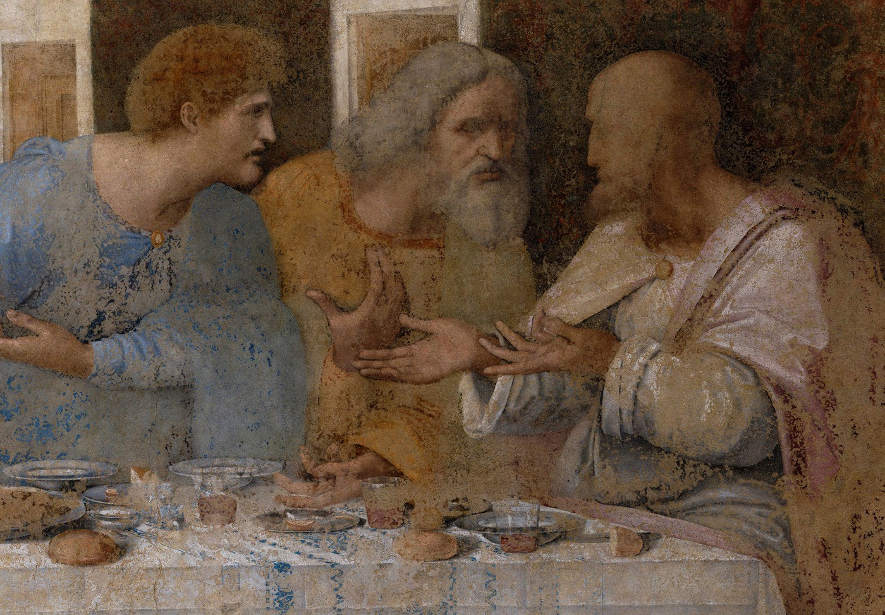
At the far end, they argue it out.
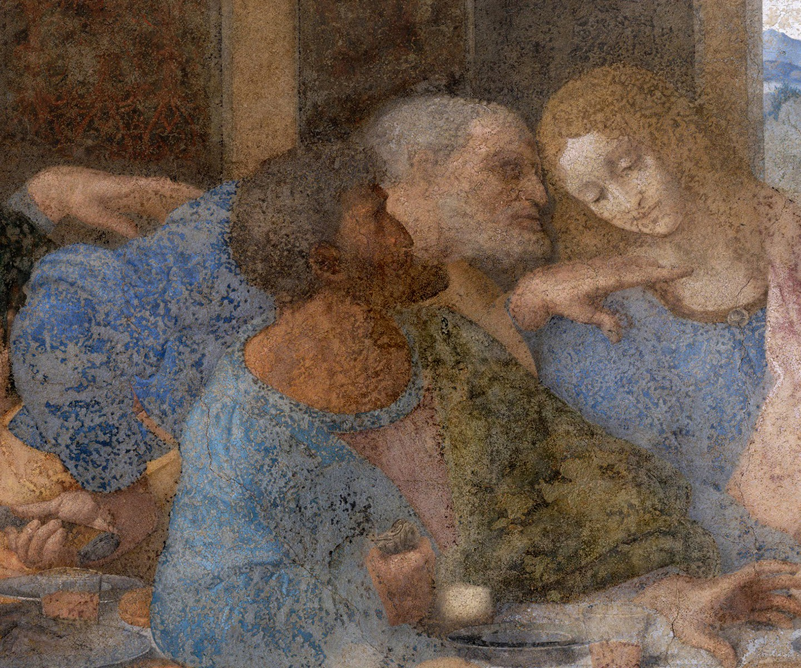
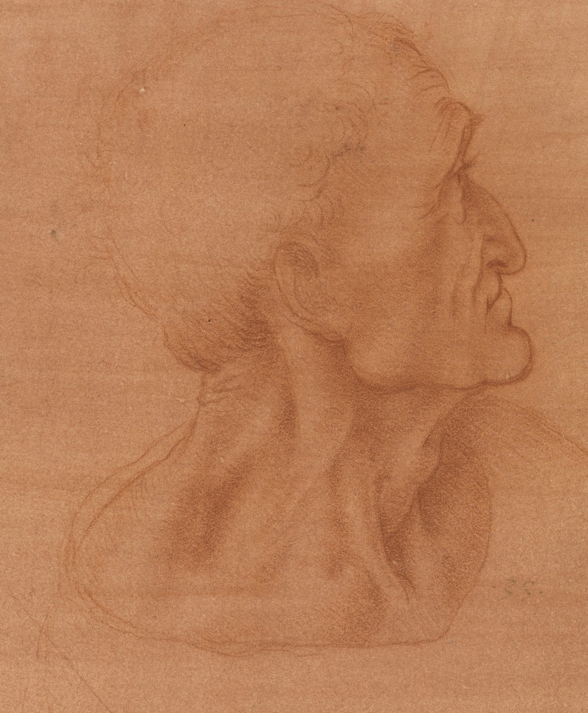
His chalk studyJudas pulls back from the light, a small bag in his fist. The silver, perhaps.
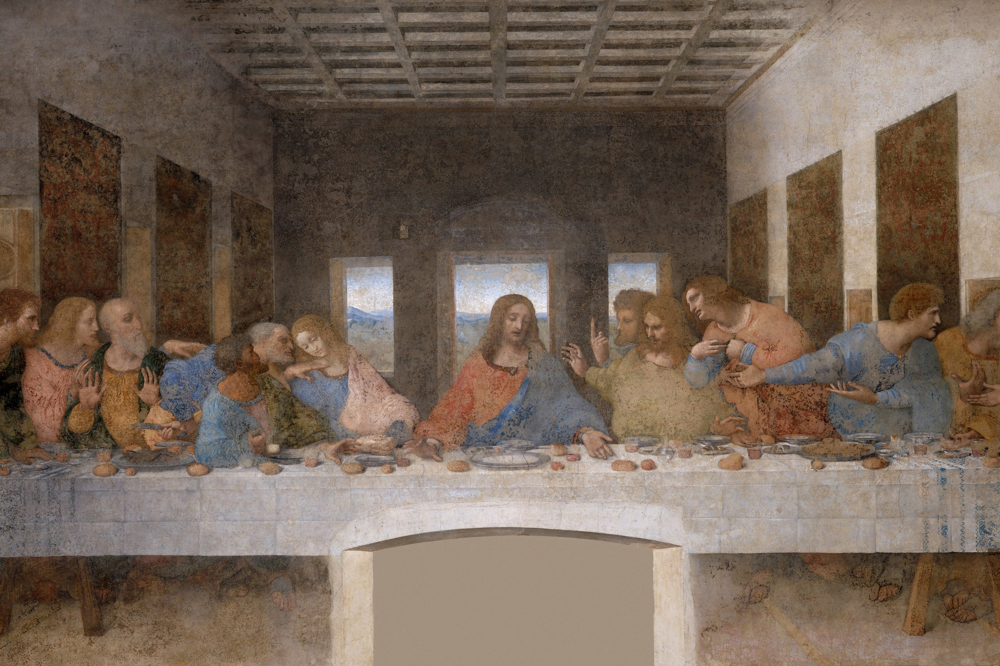
Beams, walls and hangings all meet at Christ's temple. Restorers found a tiny nail hole there. He likely tied strings to it to rule the room.
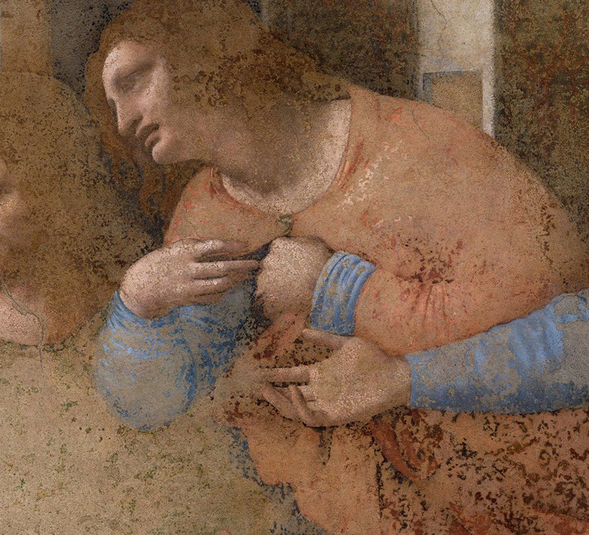
Paint on dry plaster never bonds with the wall. About twenty years after it was finished, a visiting churchman wrote that it was “beginning to decay.” Leonardo was still alive to see it.
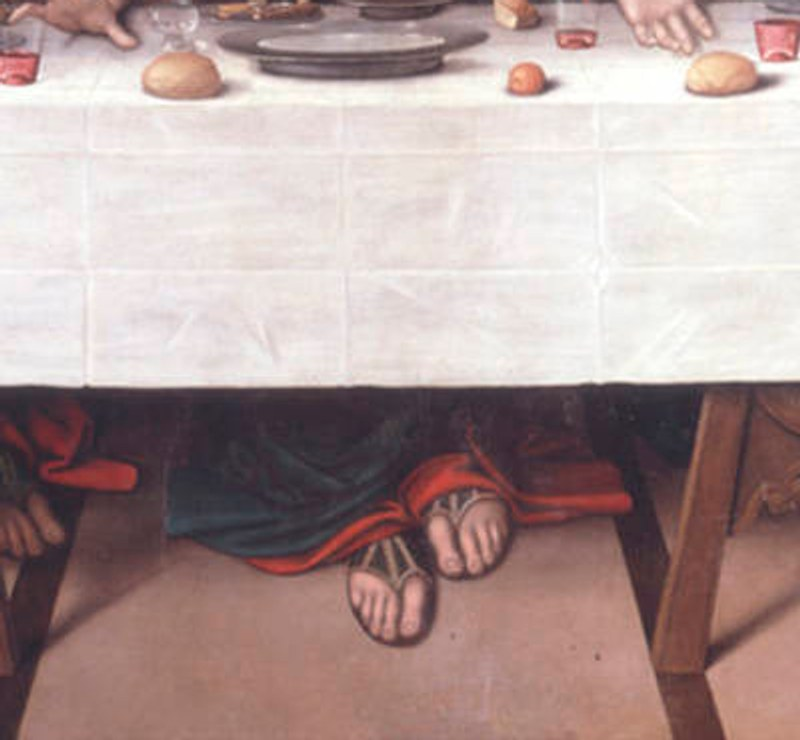
His feet, in a 1520 copy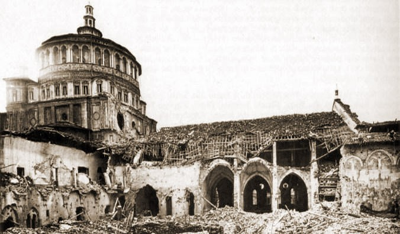
August 1943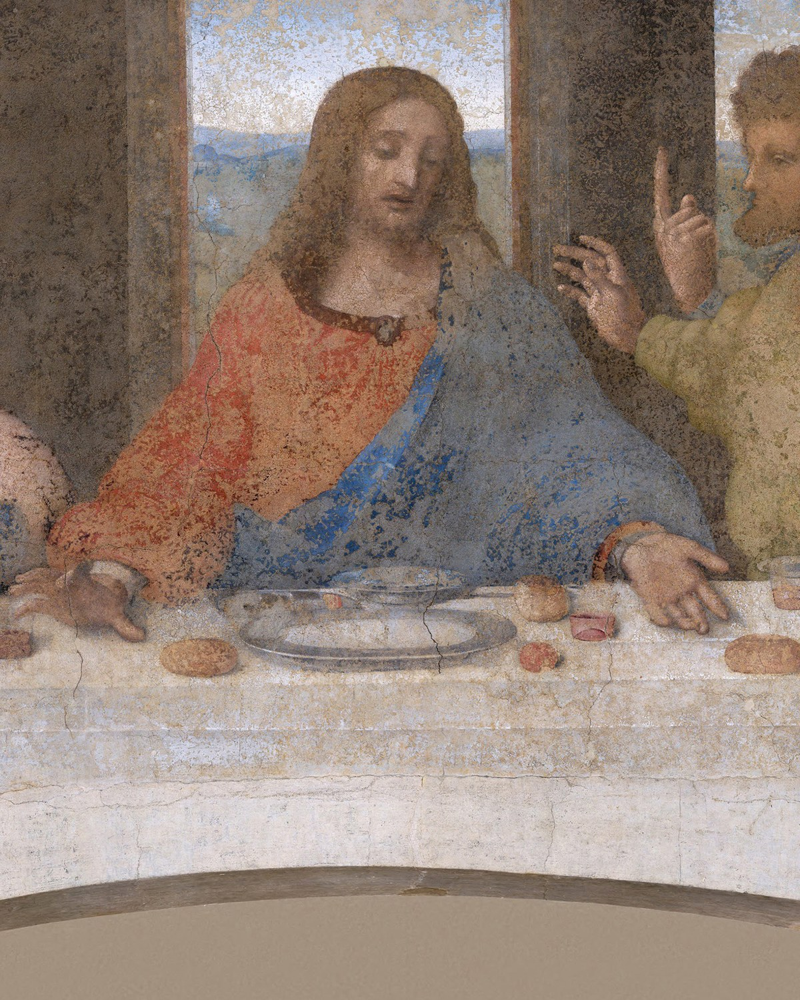
A fresco would have locked his paint into the wall. Leonardo chose time instead, and got faces that still feel alive. Today the room is sealed, and visitors get a few minutes each.